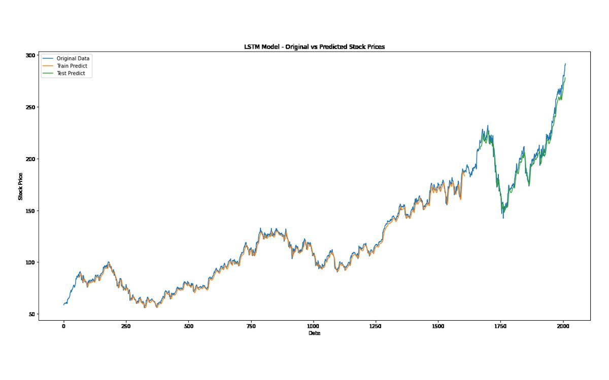

Time series · Forecasting · Streamlit
Apple (AAPL) Stock Price Forecasting
A 30-day forecast of Apple's closing price from eight years of daily data, comparing five time-series approaches and being honest about which comparison is fair.
- 5approaches compared
- 2,011trading days
- ≈ $6LSTM 1-day RMSE
- 30-dayforecast in the app

The problem
Investment and treasury teams want a view of where a stock is heading over the next month, and how much to trust that view.
The data
2,011 trading days of AAPL prices, January 2012 to December 2019; the closing price is the target.
Approach
EDA
Trend, moving averages, returns, volatility and seasonality.
Statistical models
ARIMA (ADF test, differencing, auto_arima), SARIMA and Holt-Winters (multiplicative trend and season).
Prophet and LSTM
Prophet with trend and seasonality; a 2-layer LSTM on 60-day windows.
Evaluation
Time-ordered 80/20 split, never shuffled.
Deployment
Streamlit app with interactive Plotly forecasts.
What I found
- The LSTM's RMSE of about $6 is for one-day-ahead prediction using real prices up to yesterday, a much easier task than forecasting a whole period at once.
- Holt-Winters improved with a multiplicative trend and season, consistent with a price whose swings grow as it rises.
The key insight
A fair model comparison needs the same forecast horizon for every model. That rolling 30-day comparison against a naive baseline is the next step, and it's the kind of check I apply before trusting any forecast.
Limitations & next steps
- Forecast returns rather than prices, with prediction intervals.
- Add external drivers such as market index and earnings dates.